![Slide: Recurrent Neural Networks (RNNs) process the input sequence step by step, each time step handling one element in the sequence; maintain a memory of what it has seen so far (state across time steps); can work on arbitrary lengths of input although fixed-sized inputs are normally used to help optimize hardware computation. Code: model = Sequential(); model.add(layers.SimpleRNN(16, return_sequences=True, input_shape=(None, raw_data.shape[-1]))); model.add(layers.Dense(1)); summary: simple_rnn (None, None, 16) 496; dense (None, None, 1) 17; total 513. Diagram: input, hidden layer with recurrent connection, output](../assets/slides/dl10-p04-rnn-intro.png)
Lecture10 (deep_learning_part4.1.pdf, 45 หน้า) · 2603520 Deep Learning
Lesson 7–9 จัดการข้อมูลที่มีโครงสร้างเชิงพื้นที่ (ภาพ). บทนี้เปลี่ยนเป็นข้อมูลที่มีโครงสร้างเชิงลำดับ: อนุกรมเวลาและข้อความ. มีสี่ส่วน:
สอง activation จาก Lesson 3 ทำหน้าที่ต่างกันในบทนี้. Sigmoid ให้ค่าในช่วง (0, 1) จึงใช้เป็น gate: 0 = ปิด, 1 = เปิด. tanh ให้ค่าในช่วง (−1, 1) จึงใช้สร้างค่า state ที่เป็นได้ทั้งบวกและลบ. ค่าที่ใช้ในตัวอย่าง: \(\tanh(0) = 0\), \(\tanh(0.5) \approx 0.462\), \(\tanh(1) \approx 0.762\), \(\sigma(0) = 0.5\).
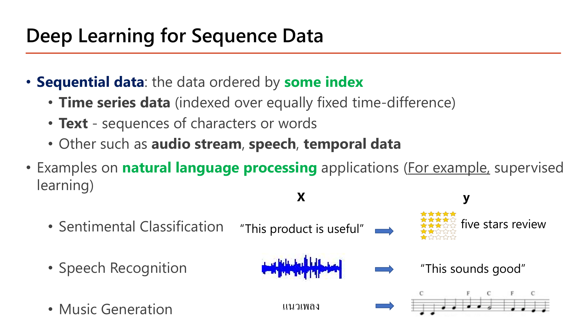
Sequential data คือข้อมูลที่เรียงตาม some index:
ตัวอย่างงาน natural language processing แบบ supervised learning ในสไลด์ ซึ่งแต่ละงานมีรูปแบบ X → y ต่างกัน:
| งาน | X | y | ชนิด (ดู §4) |
|---|---|---|---|
| Sentimental Classification | "This product is useful" (ลำดับของคำ) | five stars review (ค่าเดียว) | sequence-to-vector |
| Speech Recognition | คลื่นเสียง (ลำดับ) | "This sounds good" (ลำดับ) | sequence-to-sequence |
| Music Generation | แนวเพลง (ค่าเดียว) | โน้ตดนตรี (ลำดับ) | vector-to-sequence |
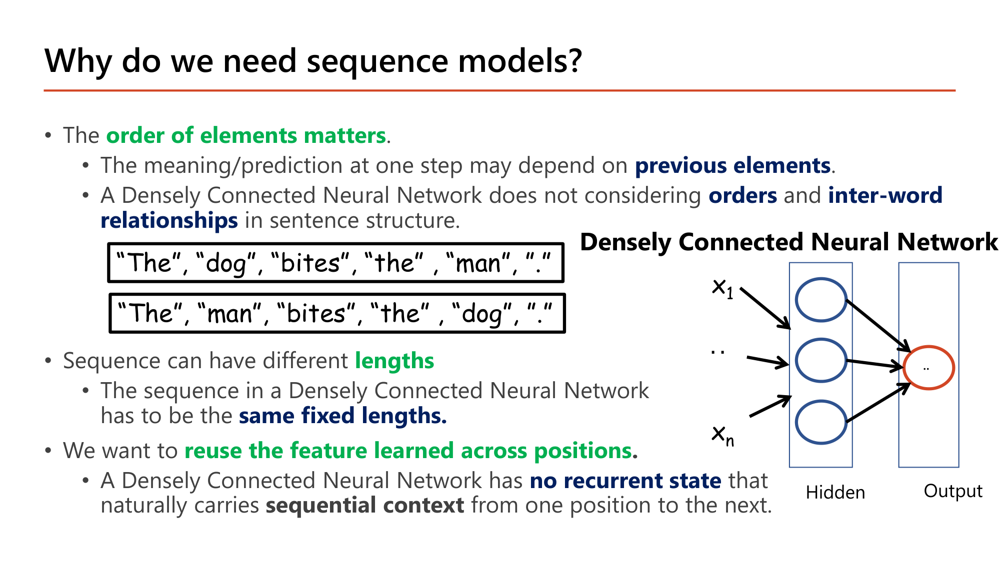
สไลด์ให้สามเหตุผลที่ densely connected network ไม่เหมาะกับลำดับ:
RNN ประมวลผลลำดับ input แบบ step by step โดยแต่ละ time step จัดการ one element in the sequence:
model = Sequential()
model.add(layers.SimpleRNN(16, return_sequences=True,
input_shape=(None, raw_data.shape[-1])))
model.add(layers.Dense(1))
model.summary()| โค้ด | ทำอะไร |
|---|---|
| layers.SimpleRNN(16, ...) | RNN พื้นฐานที่มี 16 neuron (hidden state ยาว 16) |
| return_sequences=True | คืน \(a^{\langle t \rangle}\) ของทุก time step. Output shape (None, None, 16). ค่า default คือ False ซึ่งคืนเฉพาะ step สุดท้าย (None, 16) |
| input_shape=(None, raw_data.shape[-1]) | (ความยาวลำดับ, จำนวน feature). None = ความยาวใดก็ได้; raw_data.shape[-1] = 14 feature ของ dataset อุณหภูมิ |
| layers.Dense(1) | ทำนาย 1 ค่าต่อ time step. Output shape (None, None, 1) |
สูตรทั่วไป: \(\#\text{param}_{\text{SimpleRNN}} = n_{neurons} \times (n_{neurons} + n_{inputs}) + n_{neurons}\). ความยาวของลำดับไม่อยู่ในสูตร: ลำดับยาว 3 หรือ 120 step ใช้ parameter 496 ตัวชุดเดียวกัน. Dense layer ที่มี 16 node บน input 14 ตัวมี \(14 \times 16 + 16 = 240\); ส่วนต่าง 256 ตัวคือ recurrent connection.
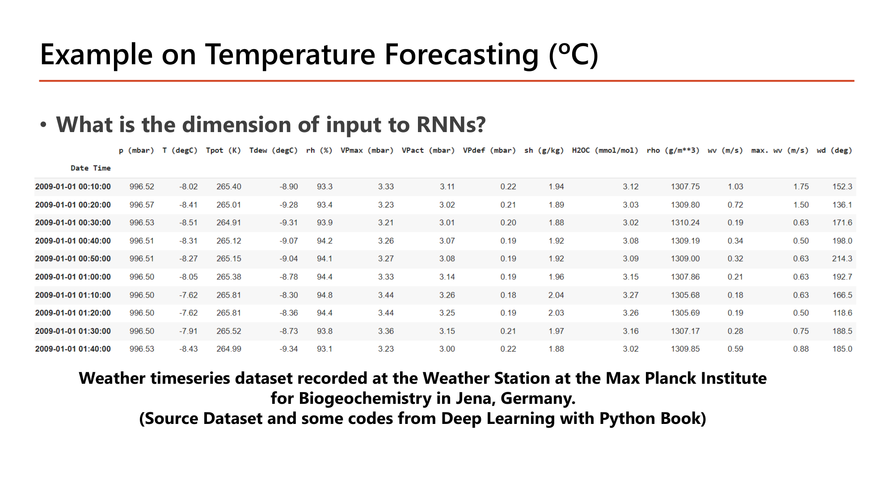
คำถามของสไลด์: "What is the dimension of input to RNNs?". ตารางเป็น weather timeseries dataset: หนึ่งแถวต่อ 10 นาที และมี 14 คอลัมน์ตัวเลข (ความดัน p, อุณหภูมิ T (degC), ความชื้น rh ฯลฯ). สี่แถวแรกของคอลัมน์ T คือ −8.02, −8.41, −8.51, −8.31 และของคอลัมน์ p คือ 996.52, 996.57, 996.53, 996.51. ตัวเลขชุดนี้ถูกใช้เป็นตัวอย่างในสองหน้าถัดไป.
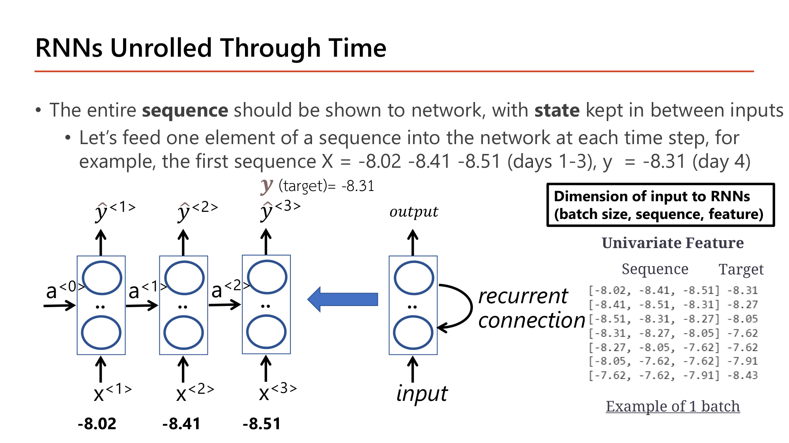
ทั้ง sequence ถูกป้อนให้ network โดย state ถูกเก็บไว้ระหว่าง input. ป้อนทีละหนึ่งสมาชิกต่อ time step: \(X = -8.02, -8.41, -8.51\) (ค่าที่ 1–3) และ target \(y = -8.31\) (ค่าที่ 4). แผนภาพ "unrolled" คือ RNN ตัวเดียววาดซ้ำสามครั้งตามเวลา ไม่ใช่สาม layer.
$$\text{Dimension of input to RNNs} = (\text{batch size},\ \text{sequence},\ \text{feature})$$Univariate feature (ใช้เฉพาะอุณหภูมิ): ตัวอย่าง 1 batch ในสไลด์มี 7 ลำดับ แต่ละลำดับยาว 3 และมี 1 feature ⇒ shape \((7, 3, 1)\). หน้าต่างเลื่อนทีละ 1: \([-8.02, -8.41, -8.51] \to -8.31\); \([-8.41, -8.51, -8.31] \to -8.27\); \([-8.51, -8.31, -8.27] \to -8.05\). Target ของแต่ละแถวคือค่าถัดจากหน้าต่าง.
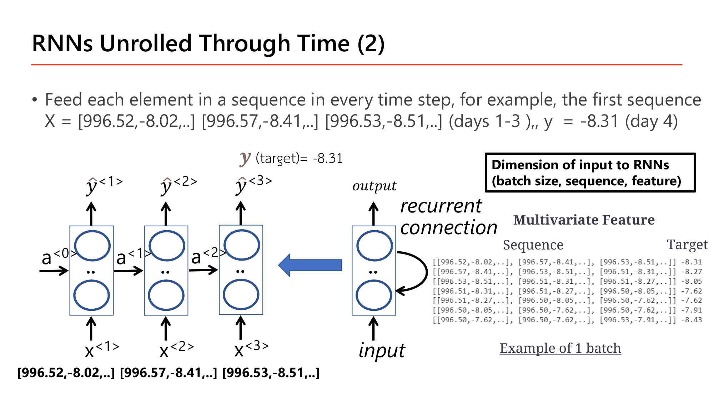
Multivariate feature (ใช้ทุกคอลัมน์): แต่ละ time step เป็น vector \([996.52, -8.02, \ldots]\) ของ 14 ค่า. Batch เดิม 7 ลำดับ ยาว 3 จึงมี shape \((7, 3, 14)\). Target ยังเป็นค่าเดียว (−8.31) เพราะทำนายเฉพาะอุณหภูมิ. มิติที่เปลี่ยนคือมิติสุดท้าย (feature) เท่านั้น.
SimpleRNN(8) รับ input ที่มี 3 feature ต่อ time step และลำดับยาว 50 step layer นี้มี parameter ที่เรียนได้กี่ตัว?SimpleRNN(16, return_sequences=True, input_shape=(None, n_features)); parameter = \(n(n + m) + n\)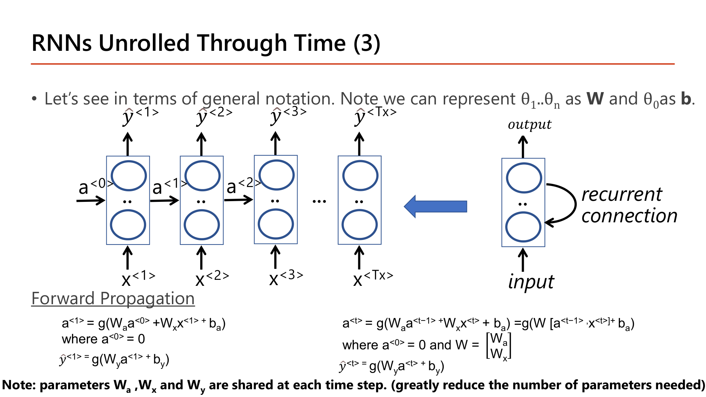
สไลด์เปลี่ยนสัญลักษณ์: \(\theta_1 \ldots \theta_n\) เขียนเป็น \(W\) และ \(\theta_0\) เขียนเป็น \(b\). ที่ time step แรก:
$$\begin{gathered}a^{\langle 1 \rangle} = g(W_a a^{\langle 0 \rangle} + W_x x^{\langle 1 \rangle} + b_a) \quad\text{where } a^{\langle 0 \rangle} = 0 \\[0.35em] \\[0.35em] \hat{y}^{\langle 1 \rangle} = g(W_y a^{\langle 1 \rangle} + b_y)\end{gathered}$$ที่ time step \(t\) ใดๆ:
$$\begin{gathered}a^{\langle t \rangle} = g(W_a a^{\langle t-1 \rangle} + W_x x^{\langle t \rangle} + b_a) = g(W [a^{\langle t-1 \rangle}, x^{\langle t \rangle}] + b_a) \\[0.35em] \\[0.35em] \hat{y}^{\langle t \rangle} = g(W_y a^{\langle t \rangle} + b_y)\end{gathered}$$state ใหม่ = activation ของ (state เก่าผ่าน W_a) + (input ปัจจุบันผ่าน W_x) + bias
หมายเหตุท้ายสไลด์: parameters \(W_a\), \(W_x\) and \(W_y\) are shared at each time step (greatly reduce the number of parameters needed). นี่คือ weight sharing ตามแกนเวลา เทียบได้กับ filter ของ CNN ที่ใช้ร่วมกันทุกตำแหน่งของภาพ (Lesson 7 §8).
![Slide: Forward Propagation. RNN processes sequences by iterating through the sequence elements and maintaining a state. a<t> = g(W [a<t-1>, x<t>] + ba) where a<0> = 0 and W = [Wa; Wx]. a<t> is an m x nneurons matrix; x<t> is an m x ninputs matrix; Wx is ninputs x nneurons; Wa is nneurons x nneurons; ba is a vector of size nneurons; by is a vector of output size. Wa and Wx are often concatenated vertically into a single W of shape (nneurons + ninputs) x nneurons. Diagram: a memory cell with tanh](../assets/slides/dl10-p09-rnn-memory-cell.png)
RNN ประมวลผลลำดับด้วยการวนผ่านสมาชิกทีละตัวและเก็บ state ไว้. หน่วยที่ทำงานนี้เรียกว่า memory cell (หรือ cell). ในแผนภาพ \(g\) คือ tanh. Shape ของแต่ละตัวตามสไลด์ (\(m\) = จำนวนตัวอย่างใน mini-batch):
| สัญลักษณ์ | Shape | ความหมาย |
|---|---|---|
| \(a^{\langle t \rangle}\) | \(m \times n_{neurons}\) | output ของ layer ที่ time step \(t\) ของทุกตัวอย่าง |
| \(x^{\langle t \rangle}\) | \(m \times n_{inputs}\) | input ของทุกตัวอย่าง |
| \(W_x\) | \(n_{inputs} \times n_{neurons}\) | weight ของ input ที่ time step ปัจจุบัน |
| \(W_a\) | \(n_{neurons} \times n_{neurons}\) | weight ของ output ที่ time step ก่อนหน้า |
| \(b_a\) | \(n_{neurons}\) | bias ของแต่ละ neuron (\(b_y\) มีขนาดเท่า output) |
| \(W\) | \((n_{neurons} + n_{inputs}) \times n_{neurons}\) | \(W_a\) และ \(W_x\) ต่อกันแนวตั้ง; \([a^{\langle t-1 \rangle}, x^{\langle t \rangle}]\) คือการต่อสอง matrix แนวนอน |
ตรวจกับ §2: \(n_{neurons} = 16, n_{inputs} = 14\) ⇒ \(W\) มี \((16 + 14) \times 16 = 480\) ค่า และ \(b_a\) มี 16 ค่า รวม 496.
\(W_a\) และ \(W_x\) ค่าเดิมถูกใช้ทั้งสาม step. \(a^{\langle 2 \rangle}\) ต่างจาก \(\tanh(0.5) = 0.4621\) ที่จะได้ถ้าไม่มี state: ส่วนต่างคือ "ความจำ" ของ \(x^{\langle 1 \rangle}\). ถ้าสลับลำดับ input เป็น \(-1, 0.5, 1\) จะได้ \(a^{\langle 3 \rangle}\) ต่างออกไป ลำดับจึงมีผลต่อผลลัพธ์.
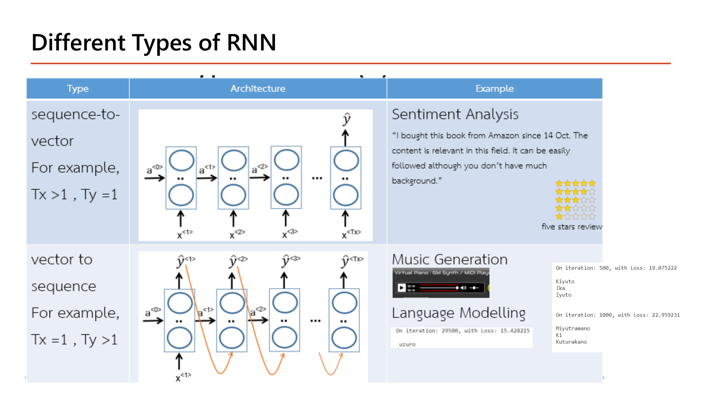
RNN แบ่งชนิดตามความยาวของ input (\(T_x\)) และ output (\(T_y\)). หน้า 10 แสดงสองชนิดแรก: sequence-to-vector ซึ่งรับรีวิวหนังสือทั้งข้อความแล้วให้คะแนนดาวค่าเดียว และ vector-to-sequence ซึ่งรับ input เดียวแล้วสร้างลำดับ โดยเส้นโค้งสีส้มในแผนภาพคือ output ของแต่ละ step ที่ถูกป้อนกลับเป็น input ของ step ถัดไป. หน้า 11 แสดงอีกสองชนิด. ตารางใต้รูปรวมทั้งสี่ชนิด.
| Type | เงื่อนไข | โครงสร้าง | ตัวอย่างในสไลด์ |
|---|---|---|---|
| sequence-to-vector | \(T_x > 1,\ T_y = 1\) | อ่านทั้งลำดับ ใช้ output ของ step สุดท้ายเท่านั้น | Sentiment Analysis: รีวิวหนังสือ → five stars review |
| vector to sequence | \(T_x = 1,\ T_y > 1\) | input เดียวที่ step แรก; output ของแต่ละ step ถูกป้อนกลับเป็น input ของ step ถัดไป | Music Generation, Language Modelling (สร้างชื่อทีละตัวอักษร) |
| sequence to sequence | \(T_x = T_y\) | หนึ่ง output ต่อหนึ่ง input ทุก step | Named Entity Recognition: ติดป้าย 0/1 ให้แต่ละคำว่าเป็นชื่อเฉพาะหรือไม่ |
| sequence to vector and then vector to sequence | \(T_x \neq T_y\) | Encoder อ่านทั้งประโยคเป็น vector; Decoder เริ่มจาก token <SOS> แล้วสร้างลำดับใหม่ | Language Translation: "Good Morning" → "สวัสดีครับ" |
กรณีแปลภาษา: "Good Morning" มี 2 คำ ส่วนคำแปลมีจำนวน token ต่างออกไป ความยาวของ input และ output ไม่จำเป็นต้องเท่ากัน จึงใช้แบบ sequence-to-sequence ตรงๆ (\(T_x = T_y\)) ไม่ได้. ใน Keras: sequence-to-vector ใช้ return_sequences=False (default); sequence-to-sequence ใช้ return_sequences=True.
return_sequences ของ recurrent layer สุดท้ายอย่างไร?![Slide: BPTT (Back Propagation through Time) is done at each point in time where the cost function is based on all the loss at every time step. First forward pass through the unrolled network; then the output sequence is evaluated using a cost function; gradients are propagated backward through the unrolled network (backward over timesteps). Model parameters are updated using the gradients computed during BPTT. Because the weights are shared across time steps, we need to sum up the gradients across the various time steps. The loss may ignore some outputs such as in a sequence-to-vector RNN](../assets/slides/dl10-p12-bptt.png)
BPTT คือ backpropagation บน network ที่คลี่ตามเวลา. Cost function รวม loss ของทุก time step: \(\text{Cost}(\hat{y}^{\langle t \rangle}, y^{\langle t \rangle})\). ขั้นตอน:
หมายเหตุ: loss อาจไม่ใช้ output บางตัว เช่นใน sequence-to-vector RNN ซึ่งคิด loss จาก output สุดท้ายเท่านั้น.
\(W_a\) มีค่าเดียว จึงอัปเดตครั้งเดียวด้วยผลรวม ไม่ใช่สามครั้งแยกกัน.
![Slide: The Problems of Simple RNN. Not good at capturing long-range dependencies: That man who met Tenjiro ... is my neighbor. This is due to the vanishing gradient problem, similar to feedforward networks that are many layers deep: multiplicative gradient exponentially decreasing with the number of layers; a network with many time steps might become untrainable. Tricks like parameter initialization, faster optimizers, dropout can alleviate but to completely solve vanishing problems we need better architectures](../assets/slides/dl10-p13-problems-simple-rnn.png)
Simple RNN จับ long-range dependencies ได้ไม่ดี. ตัวอย่างในสไลด์: "That man who met Tenjiro … is my neighbor." กริยา "is" (เอกพจน์) ต้องสอดคล้องกับประธาน "man" ซึ่งอยู่ห่างไปหลายคำ. เมื่อถึง "is" RNN ต้องยังจำได้ว่าประธานเป็นเอกพจน์.
สาเหตุคือ vanishing gradient problem ซึ่งเป็นผลแบบเดียวกับ feedforward network ที่ลึกหลาย layer (Lesson 5):
ตัวคูณที่ต่ำกว่า 1 เพียงเล็กน้อยทำให้สัญญาณจาก 50 step ก่อนเหลือ 0.5%: \(W_a\) แทบไม่ได้รับข้อมูลว่า "man" เกี่ยวกับ "is". ตัวคูณที่สูงกว่า 1 เล็กน้อยทำให้ gradient โตเกินร้อยเท่า ซึ่งคือ exploding gradient ใน §8.
![Slide: GRU (Gated Recurrent Unit) (Simplified). GRU (Kyunghyun Cho et al., 2014) adds a way to carry information across many timesteps. Memory cell c in GRU: c<t> = a<t>. Table: memory cell output c<1>..c<5> for Man who met Tenjiro, is with update gate values 1, 0, 0, 0, ?. Equations: c<t> = Gamma_u * c~<t> + (1 - Gamma_u) * c<t-1>; c~<t> = tanh(Wc [c<t-1>, x<t>] + bc); Gamma_u = sigma(Wu [c<t-1>, x<t>] + bu). Role: Gamma_u updates relevant information in the carry dataflow](../assets/slides/dl10-p14-gru-simplified.png)
GRU (Kyunghyun Cho et al., 2014) เพิ่มทางส่งข้อมูลข้ามหลาย time step. ใน GRU memory cell คือ hidden state: \(c^{\langle t \rangle} = a^{\langle t \rangle}\). สมการของ GRU แบบ simplified:
$$\tilde{c}^{\langle t \rangle} = \tanh(W_c [c^{\langle t-1 \rangle}, x^{\langle t \rangle}] + b_c)$$ $$\Gamma_u = \sigma(W_u [c^{\langle t-1 \rangle}, x^{\langle t \rangle}] + b_u)$$ $$c^{\langle t \rangle} = \Gamma_u * \tilde{c}^{\langle t \rangle} + (1 - \Gamma_u) * c^{\langle t-1 \rangle}$$memory ใหม่ = (ส่วนที่ gate เปิด) × ค่าใหม่ที่เสนอ + (ส่วนที่ gate ปิด) × memory เดิม
ตารางในสไลด์ใช้ประโยค "Man who met Tenjiro, is …": \(\Gamma_u\) = 1, 0, 0, 0, ? ที่ step 1–5.

memory รับข้อมูลของ "man" (ประธานเอกพจน์) เต็มที่ และลบของเดิมทิ้ง
\(c^{\langle 4 \rangle}\) ยังเท่ากับ \(c^{\langle 1 \rangle}\) คือข้อมูลของ "man" จึงเลือกรูปกริยา "is" ได้ถูก
เมื่อ \(\Gamma_u = 0\) memory ถูกคัดลอกไปข้างหน้าโดยไม่ผ่าน tanh และไม่ถูกคูณด้วย weight. Gradient ที่ไหลย้อนตามเส้นทางนี้ถูกคูณด้วย \((1 - \Gamma_u) = 1\) จึงไม่ลดลง. นี่คือกลไกที่ GRU แก้ vanishing gradient (แนวคิดเดียวกับ skip connection ของ ResNet ใน Lesson 8 §6).
\(c^{\langle t \rangle}\) เป็นค่าเฉลี่ยถ่วงน้ำหนักระหว่างค่าใหม่กับค่าเดิม. ในทางปฏิบัติ gate เป็น vector จึงตัดสินใจแยกสำหรับแต่ละมิติของ memory.
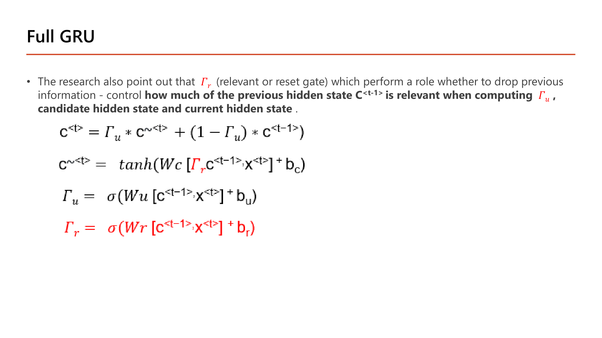
GRU เต็มรูปเพิ่ม \(\Gamma_r\) (relevant หรือ reset gate) ซึ่งตัดสินว่าจะทิ้งข้อมูลก่อนหน้าหรือไม่: ควบคุม how much of the previous hidden state \(c^{\langle t-1 \rangle}\) is relevant เมื่อคำนวณ candidate hidden state.
$$\tilde{c}^{\langle t \rangle} = \tanh(W_c [\Gamma_r * c^{\langle t-1 \rangle}, x^{\langle t \rangle}] + b_c)$$ $$\begin{gathered}\Gamma_u = \sigma(W_u [c^{\langle t-1 \rangle}, x^{\langle t \rangle}] + b_u) \\[0.35em] \\[0.35em] \Gamma_r = \sigma(W_r [c^{\langle t-1 \rangle}, x^{\langle t \rangle}] + b_r)\end{gathered}$$ $$c^{\langle t \rangle} = \Gamma_u * \tilde{c}^{\langle t \rangle} + (1 - \Gamma_u) * c^{\langle t-1 \rangle}$$สิ่งที่ต่างจากแบบ simplified มีจุดเดียว: ใน \(\tilde{c}^{\langle t \rangle}\) memory เดิมถูกคูณด้วย \(\Gamma_r\) ก่อน. ถ้า \(\Gamma_r = 0\) candidate ถูกสร้างจาก input ปัจจุบันอย่างเดียว (เริ่มใหม่โดยไม่สนอดีต).
![Slide: GRU Key Points. The GRU cell is a simplified version of the LSTM cell and seems to perform just as well. A single gate controller Gamma_u controls both the update gate and the forget gate: if it outputs 1, the update gate is totally open (= 1) and the forget gate is totally closed (1 - 1 = 0); whenever a memory must be stored, the location where it will be stored is erased first. In practice the gates are vectors with values in [0,1] as a result of sigmoid. Gamma_r performs a role whether to drop previous information](../assets/slides/dl10-p17-gru-key-points.png)
![Slide: LSTM (Long Short-Term Memory), developed by Hochreiter and Schmidhuber, 1997. Equations: a<t> = Gamma_o tanh(c<t>); c<t> = Gamma_u * c~<t> + Gamma_f * c<t-1>; c~<t> = tanh(Wc [a<t-1>, x<t>] + bc); Gamma_u = sigma(Wu [a<t-1>, x<t>] + bu); Gamma_f = sigma(Wf [a<t-1>, x<t>] + bf); Gamma_o = sigma(Wo [a<t-1>, x<t>] + bo). Diagram of an LSTM cell with forget gate, update gate, tanh, output gate and softmax output; chain of LSTM cells](../assets/slides/dl10-p18-lstm.png)
LSTM (Hochreiter & Schmidhuber, 1997) มี state สองตัวและ gate สามตัว:
$$\tilde{c}^{\langle t \rangle} = \tanh(W_c [a^{\langle t-1 \rangle}, x^{\langle t \rangle}] + b_c)$$ $$\begin{gathered}\Gamma_u = \sigma(W_u [a^{\langle t-1 \rangle}, x^{\langle t \rangle}] + b_u) \\[0.35em] \Gamma_f = \sigma(W_f [a^{\langle t-1 \rangle}, x^{\langle t \rangle}] + b_f) \\[0.35em] \Gamma_o = \sigma(W_o [a^{\langle t-1 \rangle}, x^{\langle t \rangle}] + b_o)\end{gathered}$$ $$c^{\langle t \rangle} = \Gamma_u * \tilde{c}^{\langle t \rangle} + \Gamma_f * c^{\langle t-1 \rangle}$$ $$a^{\langle t \rangle} = \Gamma_o * \tanh(c^{\langle t \rangle})$$long-term memory ใหม่ = (update gate × ค่าใหม่) + (forget gate × ค่าเดิม); short-term state = output gate × tanh ของ long-term memory
แผนภาพล่างของสไลด์แสดง LSTM cell ต่อกันตามเวลา: เส้นบน (\(c\)) วิ่งผ่านทุก cell โดยมีเพียงการคูณกับ \(\Gamma_f\) และการบวก; เส้นล่าง (\(a\)) ถูกใช้คำนวณ gate ของ cell ถัดไปและส่งเข้า softmax เพื่อให้ \(\hat{y}\).
![Slide: LSTM Key Points. LSTM can learn to recognize an important input (update gate), store it in the long-term state, preserve it for as long as needed (forget gate), and extract it whenever needed. State is split into 2 vectors c<t> and a<t>: a<t> is the short-term state and c<t> the long-term state. Gate controllers (Gamma_u, Gamma_f, Gamma_o) use the logistic activation function, outputs range from 0 to 1 and are fed to element-wise multiplication: 0 closes the gate, 1 opens it. The network learns what to store, what to throw away, and what to read. GRU is a simplified version while LSTM is much more powerful](../assets/slides/dl10-p19-lstm-key-points.png)
LSTM เรียนรู้ที่จะจำแนก input ที่สำคัญ (บทบาทของ update gate), เก็บไว้ใน long-term state, รักษาไว้ตราบเท่าที่จำเป็น (บทบาทของ forget gate) และดึงออกมาเมื่อต้องการ.
![Slide: Full GRU vs LSTM. Full GRU: a<t> = c<t>; c<t> = Gamma_u * c~<t> + (1 - Gamma_u) * c<t-1>; c~<t> = tanh(Wc [Gamma_r c<t-1>, x<t>] + bc); Gamma_u; Gamma_r. LSTM: a<t> = Gamma_o tanh(c<t>); c<t> = Gamma_u * c~<t> + Gamma_f * c<t-1>; c~<t> = tanh(Wc [a<t-1>, x<t>] + bc); Gamma_u, Gamma_f, Gamma_o computed from [a<t-1>, x<t>]. Role: Gamma_f forget irrelevant information in the carry dataflow; Gamma_o how much to reveal of a cell](../assets/slides/dl10-p20-full-gru-vs-lstm.png)
| Full GRU | LSTM | |
|---|---|---|
| Hidden state | \(a^{\langle t \rangle} = c^{\langle t \rangle}\) | \(a^{\langle t \rangle} = \Gamma_o * \tanh(c^{\langle t \rangle})\) |
| Memory cell | \(c^{\langle t \rangle} = \Gamma_u * \tilde{c}^{\langle t \rangle} + (1 - \Gamma_u) * c^{\langle t-1 \rangle}\) | \(c^{\langle t \rangle} = \Gamma_u * \tilde{c}^{\langle t \rangle} + \Gamma_f * c^{\langle t-1 \rangle}\) |
| Candidate | \(\tanh(W_c [\Gamma_r * c^{\langle t-1 \rangle}, x^{\langle t \rangle}] + b_c)\) | \(\tanh(W_c [a^{\langle t-1 \rangle}, x^{\langle t \rangle}] + b_c)\) |
| Gate | \(\Gamma_u, \Gamma_r\) (2 ตัว) คำนวณจาก \([c^{\langle t-1 \rangle}, x^{\langle t \rangle}]\) | \(\Gamma_u, \Gamma_f, \Gamma_o\) (3 ตัว) คำนวณจาก \([a^{\langle t-1 \rangle}, x^{\langle t \rangle}]\) |
| State ที่ส่งต่อ | 1 ตัว (\(c = a\)) | 2 ตัว (\(c\) และ \(a\)) |
Role ตามสไลด์: \(\Gamma_f\) = forget irrelevant information in the carry dataflow; \(\Gamma_o\) = how much to reveal of a cell. ความต่างหลักสองข้อ: (1) GRU ผูก forget กับ update ไว้ด้วยกัน (\(1 - \Gamma_u\)) แต่ LSTM แยก \(\Gamma_f\) เป็นอิสระ จึงเพิ่มข้อมูลใหม่โดยไม่ลบของเดิมได้; (2) LSTM มี \(\Gamma_o\) กรองสิ่งที่เปิดเผยออกจาก cell.
LSTM ได้ \(c = 1.1\) ซึ่งเกิน 1 ได้ เพราะ \(\Gamma_u + \Gamma_f = 1.4\) ไม่จำเป็นต้องรวมเป็น 1. GRU บังคับให้สองน้ำหนักรวมเป็น 1 จึงได้ 0.7.
อัตราส่วน 1 : 3 : 4. LSTM จึงมี parameter มากกว่า GRU ราวหนึ่งในสาม ซึ่งเป็นความหมายเชิงตัวเลขของ "GRU is a simplified version". (GRU ของ Keras ใช้ bias สองชุดโดย default จึงรายงาน \(3 \times (496 + 16) = 1{,}536\).)
LSTM(32) รับ input ที่มี 8 feature ต่อ time step layer นี้มี parameter ที่เรียนได้กี่ตัว?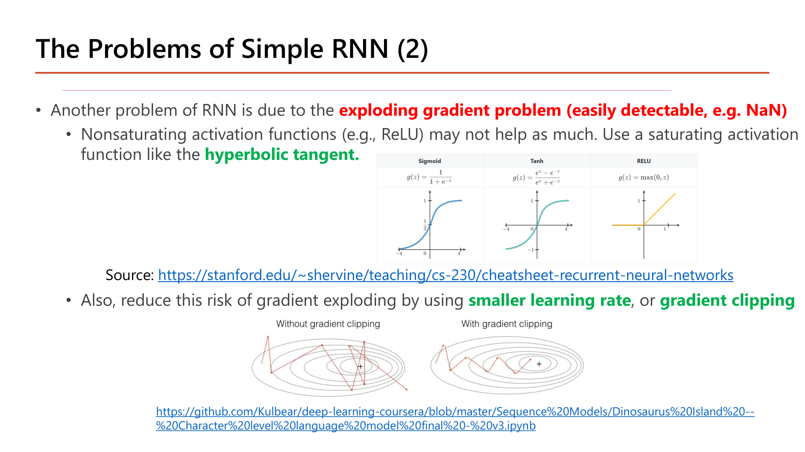
อีกปัญหาของ RNN คือ exploding gradient problem (easily detectable, e.g. NaN): loss หรือ weight กลายเป็น NaN.
ภาพล่างของสไลด์: without gradient clipping เส้นทางการอัปเดตกระโดดข้ามหุบของ cost ไปมาเป็นช่วงยาว; with gradient clipping ก้าวสั้นลงและเข้าหาจุดต่ำสุด.
ขนาดลดเหลือ 5 แต่ทิศทางคงเดิม (อัตราส่วน 3:4 เท่ากับ 6:8). ใน Keras: optimizer = Adam(clipnorm=5.0) (Lesson 5).
![Slide: Other Implementation Issues. In addition to dropout, RNN families have recurrent dropout, applied to the recurrent connections. Bidirectional-RNN/LSTM/GRU can offer greater performance on tasks where reversed order is meaningful; example sentences differing after the name. Code: model.add(Bidirectional(LSTM(16, recurrent_dropout=0.2), input_shape=(None, raw_data.shape[-1]))); model.add(Dropout(0.2)); model.add(Dense(1)). Deep (Bi-)RNN/GRU/LSTM stack recurrent layers to increase network capacity; set return_sequences=True for all recurrent layers except the last. Code: LSTM(16, recurrent_dropout=0.2, return_sequences=True, input_shape=...); LSTM(16, recurrent_dropout=0.2); Dropout(0.2); Dense(1)](../assets/slides/dl10-p22-other-implementation-issues.png)
1. Recurrent dropout. นอกจาก dropout ปกติ ตระกูล RNN มี recurrent dropout: dropout ที่ใช้กับ recurrent connection ภายใน RNN. สุ่มตัด recurrent connection บางเส้นระหว่างเทรนเพื่อป้องกัน overfitting.
2. Bidirectional-RNN/LSTM/GRU. ให้ผลดีกว่า RNN ปกติในบางงาน โดยเฉพาะงานที่ลำดับย้อนกลับมีความหมาย. ตัวอย่างในสไลด์เป็นสองประโยคที่เหมือนกันจนถึงคำว่า "Donal" แล้วต่างกันที่คำถัดไป: การตีความคำหนึ่งต้องอาศัยคำที่ตามมา ซึ่ง RNN ทิศเดียวยังไม่เห็น. Bidirectional RNN มี RNN สองตัว อ่านซ้ายไปขวาและขวาไปซ้าย แล้วต่อ output เข้าด้วยกัน.
model = Sequential()
model.add(Bidirectional(LSTM(16, recurrent_dropout=0.2),
input_shape=(None, raw_data.shape[-1])))
model.add(Dropout(0.2))
model.add(Dense(1))| โค้ด | ทำอะไร |
|---|---|
| Bidirectional(LSTM(16, ...)) | ห่อ LSTM ด้วย Bidirectional: สร้าง LSTM สองตัว (ไปหน้าและย้อนหลัง). Output ยาว 16 + 16 = 32 |
| recurrent_dropout=0.2 | dropout 20% บน recurrent connection (state ที่ส่งข้าม time step) |
| input_shape=(None, raw_data.shape[-1]) | ใส่ที่ Bidirectional ไม่ใช่ที่ LSTM ด้านใน |
| Dropout(0.2) | dropout ปกติบน output ของ recurrent layer |
| Dense(1) | ทำนาย 1 ค่า (regression): 32 + 1 = 33 parameter |
3. Deep (Bi-)RNN/GRU/LSTM. ซ้อน recurrent layer หลายชั้น (RNN, GRU, LSTM, Bi-RNN, Bi-GRU, Bi-LSTM) เพื่อเพิ่ม capacity ของ network. ต้องตั้ง return_sequences=True ให้ recurrent layer ทุกชั้น ยกเว้นชั้นสุดท้าย (ถ้าสนใจเฉพาะ output สุดท้าย).
model = Sequential()
model.add(layers.LSTM(16, recurrent_dropout=0.2, return_sequences = True,
input_shape=(None, raw_data.shape[-1])))
model.add(layers.LSTM(16, recurrent_dropout=0.2))
model.add(layers.Dropout(0.2))
model.add(layers.Dense(1))| โค้ด | ทำอะไร |
|---|---|
| layers.LSTM(16, ..., return_sequences = True, input_shape=...) | ชั้นแรกคืน output ทุก time step: shape (None, None, 16). ชั้นถัดไปเป็น recurrent layer จึงต้องได้ input 3 มิติ (batch, sequence, feature) |
| layers.LSTM(16, recurrent_dropout=0.2) | ชั้นสุดท้ายไม่ตั้ง return_sequences ⇒ คืนเฉพาะ step สุดท้าย: shape (None, 16) |
| layers.Dense(1) | 16 + 1 = 17 parameter |
\(m\) ของชั้นที่สองคือจำนวน neuron ของชั้นแรก (16) ไม่ใช่จำนวน feature ของข้อมูล (14). ถ้าลืม return_sequences=True ที่ชั้นแรก ชั้นที่สองจะได้ input 2 มิติ (None, 16) และ Keras แจ้ง error เรื่องจำนวนมิติ.
return_sequences ถูกต้อง?Bidirectional(LSTM(64)) โดยไม่ตั้ง return_sequences ให้ output ของแต่ละตัวอย่างยาวกี่ค่า?LSTM(16, recurrent_dropout=0.2)Bidirectional(LSTM(16)); output ยาวสองเท่าreturn_sequences=True ทุกชั้นยกเว้นชั้นสุดท้าย![Slide: Temperature Forecasting. Weather timeseries dataset recorded at the Weather Station at the Max Planck Institute for Biogeochemistry in Jena, Germany. Dataset contains 14 different quantities recorded every 10 minutes over several years; original data goes back to 2003 but this example is limited to 2009-2016. Goal: build a model that takes as input some data from the recent past (for example 5 days) and predicts the air temperature 24 hours in the future. Note: with RNNs it is generally not necessary to remove trend and seasonality, but it may improve performance in some cases](../assets/slides/dl10-p23-temperature-forecasting.png)
Note: เมื่อใช้ RNN โดยทั่วไปไม่จำเป็นต้องเอา trend และ seasonality ออก แต่บางกรณีการเอาออกช่วยให้ผลดีขึ้น เพราะโมเดลไม่ต้องเรียน trend หรือ seasonality เอง.
Train 210,225 แถว, validation 105,112 และ test 105,112. การแบ่งต้องเรียงตามเวลา (train เก่าสุด, test ใหม่สุด) ไม่สุ่ม เพราะเป้าหมายคือทำนายอนาคตจากอดีต.
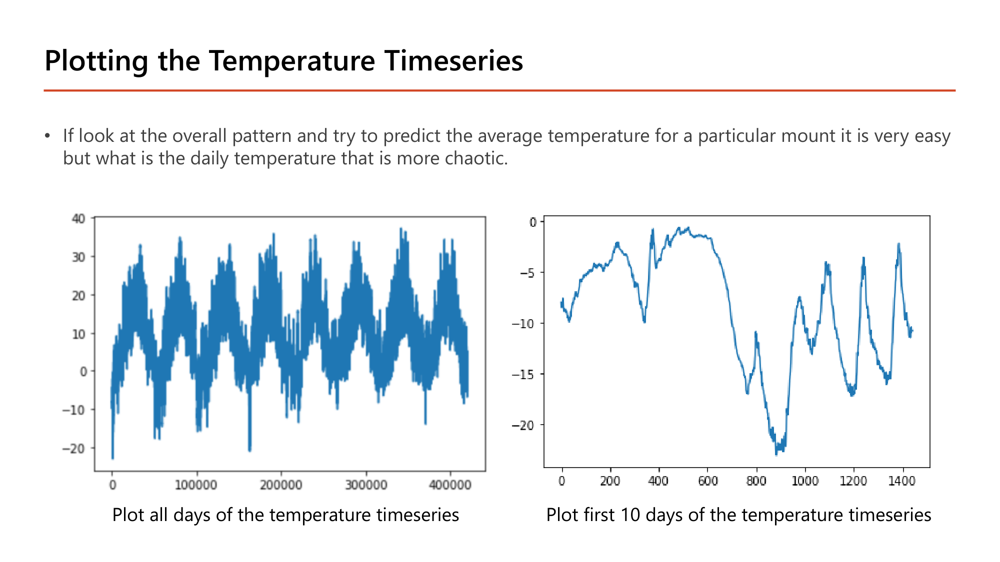
กราฟซ้าย (ทุกวัน, ราว 420,000 จุด): อุณหภูมิแกว่งระหว่างราว −20 ถึง 35 °C เป็นคลื่นรายปีที่ชัดเจน 8 รอบ (2009–2016). การทำนายอุณหภูมิเฉลี่ยของเดือนใดเดือนหนึ่งจากรูปแบบรวมจึงง่ายมาก. กราฟขวา (10 วันแรก, 1,440 จุด): อุณหภูมิเริ่มราว −8 °C ขึ้นไปใกล้ 0 แล้วดิ่งลงถึงราว −23 °C โดยไม่มีรูปแบบรายวันที่สม่ำเสมอ. อุณหภูมิรายวัน "more chaotic" และเป็นโจทย์ที่ยากกว่า.
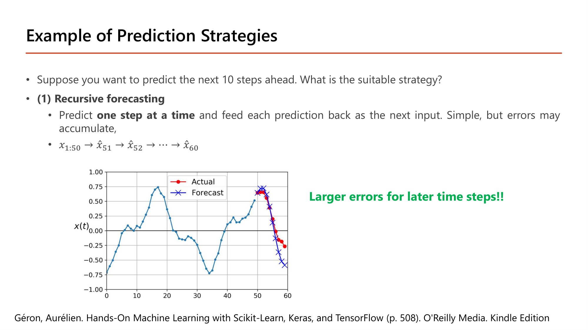
โจทย์: ต้องการทำนาย 10 step ข้างหน้า. (1) Recursive forecasting: ทำนายครั้งละ one step at a time แล้วป้อนคำทำนายกลับเป็น input ถัดไป.
$$x_{1:50} \to \hat{x}_{51} \to \hat{x}_{52} \to \cdots \to \hat{x}_{60}$$เรียบง่าย แต่ error สะสมได้: \(\hat{x}_{52}\) คำนวณจาก \(\hat{x}_{51}\) ซึ่งมี error อยู่แล้ว. กราฟในสไลด์แสดง Actual (แดง) กับ Forecast (น้ำเงิน) ที่ step 50–60: สองเส้นซ้อนกันในสองสาม step แรกแล้วถ่างออก จน step 60 ค่าจริงอยู่ราว −0.25 แต่คำทำนายอยู่ราว −0.6. ข้อสรุปที่สไลด์ทำสี: Larger errors for later time steps!!
![Slide: Example of Prediction Strategies (2). (2) Direct multi-output forecasting: predict all 10 future values at once; avoids recursive error accumulation; x1:50 -> [x51, ..., x60]. (3) Direct forecasting of one specific future horizon: simplest if only x60 matters; x1:50 -> x60. For both (2) and (3) longer-horizon predictions are more difficult. (4) Forecast at every time step: at every RNN time step predict the following 10 values; losses at all time steps provide more direct training signal; gradients reach earlier hidden states through shorter paths; more targets/computation and more complicated data preparation. For simplicity the temperature exercise uses strategy (3) to predict the 24-hour-ahead target](../assets/slides/dl10-p26-prediction-strategies-2.png)
| กลยุทธ์ | รูปแบบ | ข้อดี | ข้อเสีย |
|---|---|---|---|
| (1) Recursive forecasting | \(x_{1:50} \to \hat{x}_{51} \to \cdots \to \hat{x}_{60}\) | เรียบง่าย; โมเดลเดียวทำนาย 1 step | error สะสม |
| (2) Direct Multi-output Forecasting | \(x_{1:50} \to [\hat{x}_{51}, \ldots, \hat{x}_{60}]\) | ทำนายทั้ง 10 ค่า at once; ไม่มี error สะสมแบบ recursive | horizon ไกลยากกว่า |
| (3) Direct forecasting ของ horizon เดียว | \(x_{1:50} \to \hat{x}_{60}\) | ทำนาย one specific future horizon; simplest if only \(\hat{x}_{60}\) matters | ได้ค่าเดียว; horizon ไกลยากกว่า |
| (4) Forecast at Every Time Step | \(x_1 \to [\hat{x}_2 \ldots \hat{x}_{11}]\), \(x_2 \to [\hat{x}_3 \ldots \hat{x}_{12}]\), …, \(x_{50} \to [\hat{x}_{51} \ldots \hat{x}_{60}]\) | loss ทุก time step ให้ more direct training signal; gradient ถึง hidden state ช่วงต้นผ่านเส้นทางสั้นกว่า; เทรนเสถียรขึ้น | target และการคำนวณมากขึ้น; เตรียมข้อมูลซับซ้อนขึ้น |
สไลด์ตั้งชื่อ (3) ซ้ำกับ (2) ว่า "Direct multi-output forecasting" แต่เนื้อหาคือการทำนาย horizon เดียว. สำหรับ (2) และ (3): การทำนาย horizon ไกลยากกว่าเพราะขึ้นกับพัฒนาการในอนาคตที่ไม่แน่นอนกว่า. แบบฝึกหัดอุณหภูมิใช้ strategy (3) ทำนาย target ที่ 24 ชั่วโมงข้างหน้า.
เชื่อมกับ §4: (3) คือ sequence-to-vector; (4) คือ sequence-to-sequence (return_sequences=True) ซึ่งลดปัญหา gradient ที่ต้องไหลย้อนไกลใน §5.
![Slide: Preparation. Use timeseries_dataset_from_array() to instantiate 3 datasets (training, validation and test set). Test code: int_sequence = np.arange(10); dummy_dataset = timeseries_dataset_from_array(data=int_sequence[:-1], targets=int_sequence[3:], sequence_length=3, batch_size=2); prints [0,1,2] 3; [1,2,3] 4; ... [6,7,8] 9. Real code: sampling_rate = 6; sequence_length = 120; delay = sampling_rate * (sequence_length + 24 - 1); batch_size = 256; train_dataset = keras.utils.timeseries_dataset_from_array(raw_data[:-144], targets=temp[delay:], sampling_rate=sampling_rate, sequence_length=sequence_length, shuffle=True, batch_size=batch_size, start_index=0, end_index=num_train_samples)](../assets/slides/dl10-p27-preparation-timeseries-dataset.png)
ใช้ timeseries_dataset_from_array() สร้าง 3 dataset (training, validation, test). สไลด์ทดสอบกับลำดับจำนวนเต็มก่อน:
# testing timeseries_dataset_from_array()
int_sequence = np.arange(10)
dummy_dataset = timeseries_dataset_from_array(
# CHANGE THIS TO -1 FROM ORGINAL CODE
data = int_sequence[:-1],
# the target for the sequece that strats at data(N) will be data[N+3])
targets=int_sequence[3:],
sequence_length = 3, # a sequence will be 3 steps long
batch_size=2
)
for inputs, targets in dummy_dataset:
#print(inputs, targets)
for i in range(inputs.shape[0]):
print([int(x) for x in inputs[i]], int(targets[i]))| โค้ด | ทำอะไร |
|---|---|
| int_sequence = np.arange(10) | ลำดับ 0, 1, 2, …, 9 |
| data = int_sequence[:-1] | ข้อมูลสำหรับตัดหน้าต่าง: 0 ถึง 8 (ตัดตัวสุดท้ายออกเพราะไม่มี target ให้) |
| targets=int_sequence[3:] | target: 3 ถึง 9. Target ของหน้าต่างที่เริ่มที่ data[N] คือ targets[N] = data[N+3] |
| sequence_length = 3 | แต่ละหน้าต่างยาว 3 step |
| batch_size=2 | จัดหน้าต่างเป็น batch ละ 2 |
ผลลัพธ์ที่พิมพ์ในสไลด์:
[0, 1, 2] 3
[1, 2, 3] 4
[2, 3, 4] 5
[3, 4, 5] 6
[4, 5, 6] 7
[5, 6, 7] 8
[6, 7, 8] 9ได้ 7 หน้าต่าง: \(9 - 3 + 1 = 7\) (data 9 ตัว, หน้าต่างยาว 3). แต่ละแถวคือ "สามค่าติดกัน แล้วค่าถัดไป". ด้วย batch size 2 จึงมี \(\lceil 7/2 \rceil = 4\) batch.
# use timeseries_dataset_from_array() to instantiate 3 datasets (training, validation and test set)
sampling_rate = 6 # now the data point will be in hourly scale
sequence_length = 120 # observation will go back 5 days (120 hours)
delay = sampling_rate * (sequence_length + 24 - 1) # the target for a sequence will be the temperature 24 hours after the end of the sequence
batch_size = 256
train_dataset = keras.utils.timeseries_dataset_from_array(
# CHANGE -delay TO -144 FROM ORGINAL CODE
raw_data[:-144],
targets=temp[delay:],
sampling_rate=sampling_rate,
sequence_length=sequence_length,
shuffle=True, # two consecutive sequence in a batch aren't necessaary temporally close.
batch_size=batch_size,
start_index=0,
end_index=num_train_samples)| โค้ด | ทำอะไร |
|---|---|
| sampling_rate = 6 | หยิบทุกแถวที่ 6: ข้อมูลราย 10 นาทีกลายเป็นรายชั่วโมง |
| sequence_length = 120 | แต่ละลำดับมี 120 จุด (รายชั่วโมง) = ย้อนหลัง 5 วัน |
| delay = sampling_rate * (sequence_length + 24 - 1) | ระยะ (นับเป็นแถวดิบ) จากจุดเริ่มลำดับถึง target ที่อยู่ 24 ชั่วโมงหลังจุดสุดท้ายของลำดับ |
| raw_data[:-144] | ข้อมูล input ทั้ง 14 feature |
| targets=temp[delay:] | target คืออุณหภูมิที่เลื่อนไปข้างหน้า delay แถว |
| shuffle=True | สับลำดับของหน้าต่าง (ลำดับที่ติดกันใน batch ไม่จำเป็นต้องใกล้กันในเวลา). ข้อมูลภายในแต่ละหน้าต่างยังเรียงตามเวลา |
| start_index=0, end_index=num_train_samples | ใช้เฉพาะช่วง train. Validation ใช้ start_index=num_train_samples, end_index=num_train_samples + num_val_samples; test ใช้ start_index=num_train_samples + num_val_samples |
sampling_rate = 6, sequence_length = 120, batch_size = 256, 14 featureจุดสุดท้ายของลำดับอยู่ที่ชั่วโมง 119 นับจากจุดเริ่ม (120 จุด: 0 ถึง 119) และ \(119 + 24 = 143\)
delay = 858 และ batch มี shape (256, 120, 14) กับ target shape (256,). พจน์ "− 1" มาจากการนับ: ลำดับ 120 จุดครอบคลุม 119 ช่วงชั่วโมง. ผลของผู้สอนบน test set: baseline แบบ naive (ทำนายว่าอุณหภูมิอีก 24 ชั่วโมงเท่ากับตอนนี้) ได้ MAE 2.62 °C; GRU(16) ได้ 2.53; Bidirectional LSTM ได้ 2.52. โมเดล recurrent ชนะ baseline เพียงเล็กน้อย ซึ่งสอดคล้องกับข้อสังเกตหน้า 24 ว่าอุณหภูมิรายวัน chaotic.
data = seq[:-1], targets = seq[4:], sequence_length = 4 ตัวอย่างแรกและจำนวนตัวอย่างทั้งหมดคือข้อใด?sampling_rate, sequence_length และ delay = sampling_rate * (sequence_length + 12 - 1) คือข้อใด?sampling_rate = 6, sequence_length = 120, delay = sampling_rate * (sequence_length + 24 - 1) = 858, batch_size = 256, shuffle=True, start_index/end_index[0, 1, 2] 3 ถึง [6, 7, 8] 9 (7 แถว)![Slide: Deep Learning for Textual Data. NLP is the area that aims to give computers the ability to process and understand human language and can predict or generate something useful. Venn diagram: AI contains ML and NLP; DL inside ML; NLP overlaps ML and DL. NLP tasks ordered by difficulty from easy to hard: spell checking, keyword-based information retrieval, topic modeling, text classification, information extraction, closed domain conversational agent, text summarization, question answering, machine translation, open domain conversational agent](../assets/slides/dl10-p28-dl-for-textual-data.png)
NLP คือสาขาที่มุ่งให้คอมพิวเตอร์สามารถประมวลผลและ understand human language และสามารถ predict หรือ generate สิ่งที่มีประโยชน์. แผนภาพซ้าย: NLP เป็นสาขาใน AI ที่ซ้อนทับบางส่วนกับ ML และ DL (NLP บางส่วนไม่ใช้ ML เช่น ระบบ rule-based). แผนภาพขวาเรียงงาน NLP จากง่ายไปยาก:
| ระดับ | งาน |
|---|---|
| Easy | Spell Checking, Keyword-Based Information Retrieval, Topic Modeling |
| Medium | Text Classification, Information Extraction, Closed Domain Conversational Agent |
| Hard | Text Summarization, Question Answering, Machine Translation, Open Domain Conversational Agent |
![Slide: Timeline in NLP for AI-related Domain. Handcrafted rules dominant until the 1990s; from the late 1980s computing power and data opened doors to alternatives. Decision trees and logistic regression from the 1990s to the early 2010s, research centred on feature engineering. In 2011 George Dahl and Microsoft Research pioneered deep learning for natural language on human speech data. Around 2014-2015 researchers explored LSTM. From 2015 to 2017 recurrent networks, especially Bidirectional LSTM, excelled. Around 2017-2018 Transformers revolutionized NLP](../assets/slides/dl10-p29-nlp-timeline.png)
| ช่วงเวลา | แนวทางหลัก |
|---|---|
| ถึงทศวรรษ 1990 (เริ่มเปลี่ยนช่วง late 1980s) | Handcrafted rules |
| 1990s ถึงต้น 2010s | decision trees และ logistic regression; งานวิจัยเน้น feature engineering |
| 2011 | George Dahl และ Microsoft Research บุกเบิก deep learning กับภาษา โดยเทรน neural network บน human speech data |
| 2014–2015 | LSTM (อัลกอริทึมจากปลายทศวรรษ 1990) ถูกนำมาใช้กับ language understanding |
| 2015 to 2017 | RNN โดยเฉพาะ Bidirectional LSTM เป็นมาตรฐานของ summarization, question-answering, machine translation |
| 2017–2018 | Transformers ปฏิวัติ NLP และเป็นแกนของระบบ NLP ส่วนใหญ่ในปัจจุบัน |
![Slide: Challenges in Processing Text. Words on their own have no real meaning; meaning comes from their use within the larger context. The order of words is highly important; there are often long-term sequential dependencies between words. Textual data has a rules-based grammatical structure: The cat sat on the having is grammatically incorrect; I am in the beach does not make sense despite being grammatically correct. Textual data is highly sensitive to small changes in its individual units; every word is vital to the overall meaning of the passage](../assets/slides/dl10-p30-challenges-processing-text.png)
ข้อ 4 ต่างจากภาพ: เปลี่ยนค่า pixel หนึ่งจุดจาก 120 เป็น 121 ภาพยังเป็นภาพเดิม แต่เปลี่ยน "not" หนึ่งคำ ประโยคมีความหมายตรงข้าม.
![Slide: Preparing Text. Vectorized text is the process of transforming text into vectorized arrays (numeric tensors) in 3 steps. Text standardization: convert to lowercase, remove punctuation, stemming. Story was so lovely because it was true. -> story was so lovely because it was true. Tokenization breaks text into units (tokens): characters, words, or n-grams. "story", "was", "so", "lovely", "because", "it", "was", "true" as x<1>..x<8> with label y. Vectorization associates each word with a numerical vectorized array; approaches include one-hot encoding and word embeddings](../assets/slides/dl10-p31-preparing-text.png)
Vectorized text คือกระบวนการ transforming text into vectorized arrays (numeric tensors). มี 3 ขั้น:
| ขั้น | ทำอะไร | ตัวอย่างในสไลด์ |
|---|---|---|
| Text Standardization | แปลงข้อความให้อยู่ในรูปที่ประมวลผลง่าย: ทำเป็นตัวพิมพ์เล็ก, ลบเครื่องหมายวรรคตอน, stemming (รวมรูปแปรของคำเป็นรูปเดียว) | "Story was so lovely because it was true." → "story was so lovely because it was true" |
| Tokenization | แบ่งข้อความเป็นหน่วย (เรียกว่า tokens): ตัวอักษร, คำ หรือ n-grams (กลุ่มของคำติดกัน N คำหรือน้อยกว่า) | "story", "was", "so", "lovely", "because", "it", "was", "true" = \(x^{\langle 1 \rangle} \ldots x^{\langle 8 \rangle}\) |
| Vectorization | ผูกแต่ละคำกับ numerical vectorized array. วิธีแทนข้อความมีหลายแบบ เช่น one-hot encoding และ word embeddings | (§11–12) |
ประโยคตัวอย่างมี 8 token จึงเป็นลำดับยาว \(T_x = 8\) และ label ของงาน sentiment คือ \(y\) ค่าเดียว (ดาวสีน้ำเงินหรือแดงในสไลด์) ซึ่งเป็นงาน sequence-to-vector. มี 7 คำที่ไม่ซ้ำ เพราะ "was" ปรากฏสองครั้ง (ตำแหน่ง 2 และ 7).
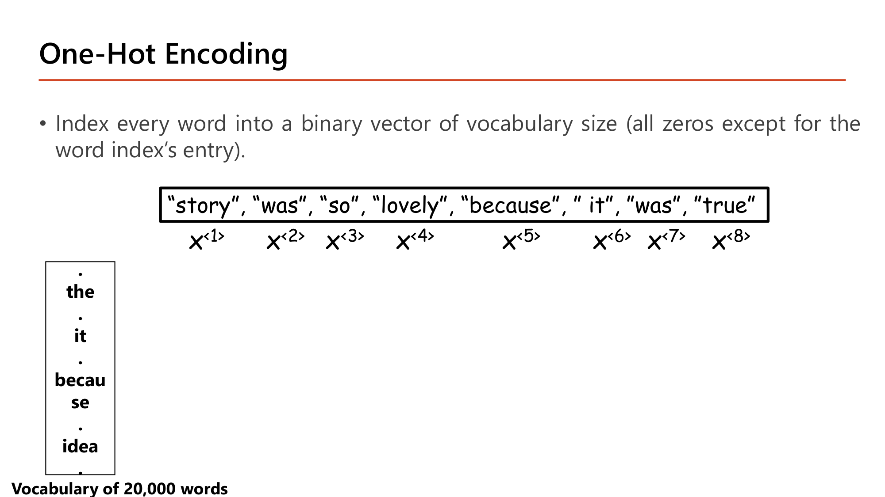
One-hot encoding: ให้ index กับทุกคำ แล้วแทนแต่ละคำด้วย binary vector ที่ยาวเท่าขนาด vocabulary โดยเป็นศูนย์ทั้งหมดยกเว้นตำแหน่งของ index ของคำนั้น. สไลด์ใช้ vocabulary 20,000 คำ.
One-hot ใช้ 160,000 ค่าซึ่ง 99.995% เป็นศูนย์ (sparse). Embedding 8 มิติใช้ 64 ค่าที่ทุกค่ามีข้อมูล น้อยกว่า 2,500 เท่า. "was" ตัวที่ 2 และตัวที่ 7 ได้ one-hot vector เดียวกัน.
![Slide: Problems of One-hot Encoding. One-hot representation treats each word as atomic units (an exact meaning of the word but not its context), so it doesn't allow an algorithm to generalize across different words. It is not easy to learn the missing words; with a semantic representation we could learn features. Example: "story", "are", "short", "tales"; "novel", "are", "____", works, "of", "fictions". The size of a one-hot vector is proportional to vocabulary size making it computationally inefficient to store, compute with and learn from (sparsity leads to overfitting). These days one-hot is seldom used](../assets/slides/dl10-p33-problems-one-hot.png)
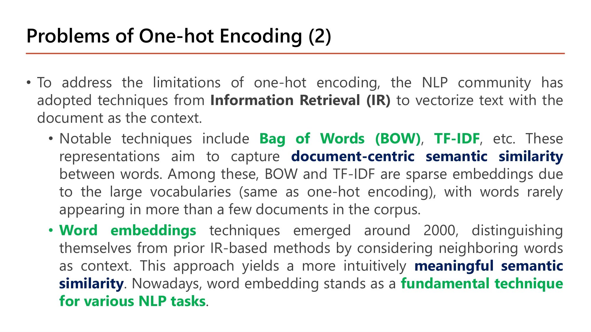
| กลุ่ม | เทคนิค | บริบทที่ใช้ | ลักษณะ |
|---|---|---|---|
| จาก Information Retrieval (IR) | Bag of Words (BOW), TF-IDF | document เป็น context | จับ document-centric semantic similarity; เป็น sparse embeddings เพราะ vocabulary ใหญ่ (เหมือน one-hot) |
| Word embeddings (ราวปี 2000) | Word2Vec, GloVe ฯลฯ | คำข้างเคียง (neighboring words) เป็น context | ได้ meaningful semantic similarity ที่ตรงสัญชาตญาณกว่า; เป็น fundamental technique for various NLP tasks |
BOW นับว่าแต่ละคำปรากฏกี่ครั้งในเอกสาร โดยไม่สนลำดับ. TF-IDF ถ่วงน้ำหนักจำนวนนั้นด้วยความหายากของคำในคลังเอกสาร: คำที่พบในทุกเอกสาร (เช่น "the") ได้น้ำหนักต่ำ. ทั้งสองยังเป็น vector ยาวเท่า vocabulary.
![Slide: Word Embeddings are arrays of word vectors that represent each word with an array of floating-point numbers, encoding word meanings and relationships. Unlike sparse word vectors, word embeddings are dense, relatively low dimensional, which reduce the size of training examples and quickly learn from similar semantic relationship of words. Specific movements within a vector space represent relative semantic relationships. Example: Dog is a human favorite pet. Its wide-ranging animal can be like a wolf. Cat is a human favorite pet. Its wide-ranging animal can be like a ____. 2D plot with Wolf, Tiger, Dog, Cat. One-hot: sparse, high-dimensional, hardcoded; embeddings: dense, lower-dimensional, learned from data](../assets/slides/dl10-p35-word-embeddings.png)
Word embeddings คือ array ของ word vector ที่แทนแต่ละคำด้วย array ของ floating-point. Vector เหล่านี้เข้ารหัสความหมายของคำและความสัมพันธ์ระหว่างคำ.
| One-hot word vectors | Word embeddings |
|---|---|
| Sparse | Dense |
| High-dimensional | Lower-dimensional |
| Hardcoded | Learned from data |
คำที่เติมคือ "tiger". แกนตั้งของรูปทำหน้าที่เป็น "สัตว์เลี้ยง → สัตว์ป่า" และแกนนอนเป็น "ตระกูลสุนัข → ตระกูลแมว". การเลื่อนขึ้นจาก Dog ได้ Wolf และเลื่อนขึ้นเท่ากันจาก Cat ได้ Tiger: ความสัมพันธ์เดียวกันคือทิศทางเดียวกันใน vector space.
![Slide: Learning Word Embeddings. The simplest way is to learn word embeddings jointly with the main task (unsupervised way). Embedding layer maps integer indices (specific words) to dense vectors. Using 10,000 words and 3 previous words (X) to predict the next word (y). Embedding matrix E of shape (8, 10000), 8-dimensional semantic representation; one-hot vector O_6222 of shape (10000, 1); e_6222 = E O_6222. Network: x1 (O_909), x2 (O_4911), x3 (O_0011) through E give e_909, e_4911, e_0011, then hidden layer and softmax output](../assets/slides/dl10-p36-learning-word-embeddings.png)
วิธีที่ง่ายที่สุดคือเรียน word embeddings ไปพร้อมกับงานหลัก (สไลด์เรียกว่า unsupervised way เพราะ label มาจากตัวข้อความเอง). Embedding layer แปลง integer index (ที่แทนคำ) เป็น dense vector. ตัวอย่างของสไลด์: vocabulary 10,000 คำ ใช้ 3 คำก่อนหน้า (X) ทำนายคำถัดไป (y).
Embedding Matrix \(E\) มี shape (8, 10000): 8 แถวคือ 8 มิติของ semantic representation และ 10,000 คอลัมน์คือคำในลำดับ a … dog … zoo. คอลัมน์ที่ 6222 คือ embedding ของคำที่ 6222. การหยิบคอลัมน์เขียนเป็นผลคูณกับ one-hot vector:
$$e_{6222} = E \cdot O_{6222}$$คูณ matrix กับ one-hot vector = หยิบคอลัมน์ที่ตรงกับตำแหน่งของเลข 1
ถ้าป้อน one-hot ตรงๆ hidden layer จะรับ \(3 \times 10{,}000 = 30{,}000\) ค่า; ผ่าน embedding เหลือ 24. Matrix \(E\) ตัวเดียว (80,000 parameter) ถูกใช้กับทั้งสามตำแหน่ง และถูกอัปเดตด้วย backpropagation เหมือน weight อื่น. เมื่อเทรนเสร็จ \(E\) คือ word embeddings. ใน Keras: Embedding(input_dim=10000, output_dim=8) ซึ่งใช้การ lookup ตาม index แทนการคูณ matrix จริง.
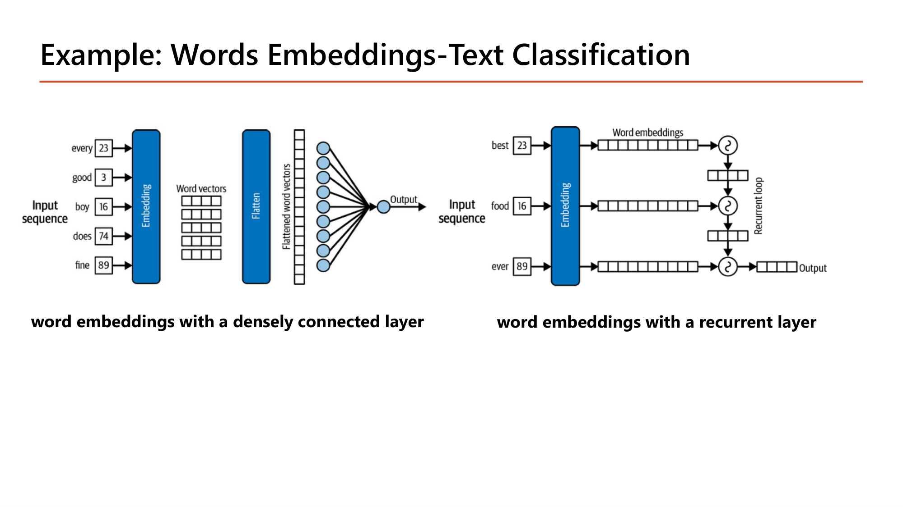
สองวิธีใช้ embedding กับงาน text classification. ในทั้งสองรูป คำถูกแปลงเป็น index ก่อน (every → 23, good → 3, boy → 16, does → 74, fine → 89) แล้ว Embedding layer แปลง index เป็น word vector.
| Embedding + densely connected layer | Embedding + recurrent layer | |
|---|---|---|
| หลัง embedding | Flatten word vector ทั้งหมดเป็น vector เดียว | ป้อน word vector ทีละคำเข้า recurrent loop |
| ลำดับคำ | ตำแหน่งถูกผูกกับ weight ตายตัว; ต้องยาวเท่ากันทุกประโยค | state ส่งต่อบริบทจากคำก่อนหน้า; รับความยาวต่างกันได้ |
| ตัวอย่าง 5 คำ, embedding 8 มิติ | dense รับ \(5 \times 8 = 40\) ค่า | RNN รับ 8 ค่าต่อ step จำนวน 5 step |
![Slide: Pretrained Word Embeddings. Load embedding vectors from a precomputed embedding space that is highly structured and captures generic aspects of language structure. Such embeddings can be thought of as a large collection of key-value pairs, where keys are the words in the vocabulary and values are their corresponding word vectors. Popular pretrained embeddings: Word2Vec (Tomas Mikolov at Google, 2013), GloVe (Global Vectors for Word Representation, Stanford, 2014), fastText embeddings (Facebook)](../assets/slides/dl10-p38-pretrained-word-embeddings.png)
แทนการเรียน embedding เอง สามารถโหลด embedding vectors จาก embedding space ที่คำนวณไว้แล้ว ซึ่งมีโครงสร้างดีและจับลักษณะทั่วไปของภาษา. เป็นแนวคิดเดียวกับ transfer learning ของ Lesson 8 §8. Embedding ชนิดนี้มองได้เป็น a large collection of key-value pairs: keys are the words ใน vocabulary และ values are their corresponding word vectors.
| Pretrained embedding | ผู้พัฒนา | ปี |
|---|---|---|
| Word2Vec | Tomas Mikolov ที่ Google | 2013 |
| GloVe (Global Vectors for Word Representation) | นักวิจัย Stanford | 2014 |
| fastText embeddings | — |
![Slide: Learning Word Embeddings (2). Word2Vec (self-supervised way). Continuous bag of words (CBOW): build a language model that correctly predicts the center word given the context words. CBOW does not simply sum one-hot vectors; it looks up the context-word embeddings, combines them, and learns the embedding matrix by predicting the center word. Source text The quick brown fox jumps over the lazy dog with training samples (context, target): ((quick, brown), The); ((The, brown, fox), quick); ((The, quick, fox, jumps), brown); ((quick, brown, jumps, over), fox). Diagram: w(t-2), w(t-1), w(t+1), w(t+2) to SUM to w(t)](../assets/slides/dl10-p39-word2vec-cbow.png)
Word2Vec เรียน embedding แบบ self-supervised: label สร้างจากตัวข้อความเอง. มีสองรูปแบบ. แบบแรกคือ Continuous bag of words (CBOW): สร้าง language model ที่ทำนาย center word จาก context words รอบๆ. CBOW ไม่ได้บวก one-hot vector ตรงๆ: มัน lookup embedding ของ context word, รวมเข้าด้วยกัน (SUM ในแผนภาพ) แล้วเรียน embedding matrix จากการทำนาย center word.
ตัวอย่างจาก "The quick brown fox jumps over the lazy dog." ด้วยหน้าต่าง 2 คำแต่ละข้าง. Training sample มีรูป (context, target):
| Center word | Training sample ของ CBOW |
|---|---|
| The | ((quick, brown), The) |
| quick | ((The, brown, fox), quick) |
| brown | ((The, quick, fox, jumps), brown) |
| fox | ((quick, brown, jumps, over), fox) |
"The" อยู่ต้นประโยคจึงมี context เฉพาะด้านขวา 2 คำ; "quick" มี 3 คำ; "brown" และ "fox" มีครบ 4 คำ. CBOW ให้ 1 sample ต่อ center word.
![Slide: Learning Word Embeddings (3). SkipGram is similar to CBOW but reverses the prediction task: given a center word, Skip-Gram predicts the surrounding context words. Usually slower to train than CBOW, but often learns better representations for rare words; can perform well with smaller datasets. Training samples (target, context): (the, quick), (the, brown); (quick, the), (quick, brown), (quick, fox); (brown, the), (brown, quick), (brown, fox), (brown, jumps); (fox, quick), (fox, brown), (fox, jumps), (fox, over). Diagram: w(t) to w(t-2), w(t-1), w(t+1), w(t+2)](../assets/slides/dl10-p40-word2vec-skipgram.png)
SkipGram คล้าย CBOW แต่กลับทิศงานทำนาย: ให้ center word แล้วทำนาย context words รอบๆ. โดยทั่วไป slower to train กว่า CBOW แต่มักเรียน representation ของ rare words ได้ดีกว่า เพราะแต่ละ center word ถูกใช้ทำนาย context หลายคำ และทำงานได้ดีกับ smaller datasets.
SkipGram ได้ 13 คู่ ตรงกับรายการในสไลด์: (the, quick), (the, brown); (quick, the), (quick, brown), (quick, fox); (brown, the), (brown, quick), (brown, fox), (brown, jumps); (fox, quick), (fox, brown), (fox, jumps), (fox, over). จำนวน sample ที่มากกว่าราว 3 เท่าอธิบายทั้ง "slower to train" และ "better for rare words": คำหายากที่ปรากฏครั้งเดียวให้ sample ได้ถึง 4 คู่แทน 1. (สไลด์พิมพ์คู่หนึ่งว่า "(blown, fox)" ซึ่งหมายถึง (brown, fox).)
Embedding(input_dim=5000, output_dim=64) มี parameter ที่เรียนได้กี่ตัว และลำดับยาว 20 token ที่ผ่าน layer นี้มี output shape ต่อตัวอย่างเป็นเท่าใด?![Slide: Classify Movies Reviews for The IMDB Dataset. train/pos/ contains 12,500 text files of positive-sentiment reviews; negative reviews live in neg directories; 25,000 text files for training and 25,000 for testing. Code: batch_size = 32; train_ds = keras.utils.text_dataset_from_directory("aclImdb/train", batch_size=batch_size); val_ds from "aclImdb/val"; test_ds from "aclImdb/test"; text_only_train_ds = train_ds.map(lambda x, y: x). Output: Found 20000 files belonging to 2 classes; Found 5000; Found 25000. inputs.shape (32,), dtype string; targets.shape (32,), dtype int32](../assets/slides/dl10-p41-imdb-dataset.png)
โฟลเดอร์ train/pos/ มีไฟล์ข้อความ 12,500 ไฟล์ แต่ละไฟล์คือรีวิวภาพยนตร์เชิงบวก; รีวิวเชิงลบอยู่ใน neg. รวม 25,000 ไฟล์สำหรับ training และอีก 25,000 สำหรับ testing.
# These datasets yield inputs that are TensorFlow tf.string tensors and targets that are
# int32 tensors encoding the value "0" or "1."
batch_size = 32
train_ds = keras.utils.text_dataset_from_directory(
"aclImdb/train", batch_size=batch_size
)
val_ds = keras.utils.text_dataset_from_directory(
"aclImdb/val", batch_size=batch_size
)
test_ds = keras.utils.text_dataset_from_directory(
"aclImdb/test", batch_size=batch_size
)
# Prepare a dataset that only yields raw text inputs (no labels) fot TextVectorization
text_only_train_ds = train_ds.map(lambda x, y: x)
for inputs, targets in train_ds:
print("inputs.shape:", inputs.shape)
print("inputs.dtype:", inputs.dtype)
print("targets.shape:", targets.shape)
print("targets.dtype:", targets.dtype)
print("inputs[0]:", inputs[0])
print("targets[0]:", targets[0])
break| โค้ด | ทำอะไร |
|---|---|
| keras.utils.text_dataset_from_directory("aclImdb/train", batch_size=batch_size) | อ่านไฟล์ข้อความจากโฟลเดอร์ย่อย (neg, pos) และใช้ชื่อโฟลเดอร์เป็น label 0/1. คู่ของ image_dataset_from_directory ใน Lesson 8 §9 |
| text_only_train_ds = train_ds.map(lambda x, y: x) | dataset ที่มีเฉพาะข้อความ (ทิ้ง label) สำหรับให้ TextVectorization เรียน vocabulary |
| for inputs, targets in train_ds: … break | ดู batch แรกแล้วหยุด |
ผลลัพธ์ที่พิมพ์ในสไลด์: Found 20000 files belonging to 2 classes. (train), Found 5000 files (val), Found 25000 files (test); inputs.shape: (32,), inputs.dtype: <dtype: 'string'>, targets.shape: (32,), targets.dtype: <dtype: 'int32'>, targets[0]: tf.Tensor(1, shape=(), dtype=int32).
Training 25,000 ไฟล์ถูกแบ่งเป็น train 20,000 และ validation 5,000 (\(20{,}000 + 5{,}000 = 25{,}000\); validation = 20%). Input ยังเป็น string (หนึ่งรีวิวต่อหนึ่งสมาชิก) ไม่ใช่ตัวเลข จึงมี shape (32,) มิติเดียว. จำนวน batch ต่อ epoch: train \(20{,}000 / 32 = 625\); test \(\lceil 25{,}000 / 32 \rceil = \lceil 781.25 \rceil = 782\) ตรงกับ 625/625 และ 782/782 ใน log ของหน้า 43–44.
![Slide: TextVectorization layer is fast and efficient to vectorize text. By default it uses convert to lowercase and remove punctuation for text standardization, and split on whitespace for tokenization. Code: text_vectorization = TextVectorization(max_tokens=20000, output_mode="int"); text_vectorization.adapt(text_only_train_ds); vocabulary = text_vectorization.get_vocabulary(). Comments: two special tokens, the mask token (index 0) for padding and the OOV token (index 1) for not recognized words](../assets/slides/dl10-p42-text-vectorization.png)
TextVectorization layer ทำสามขั้นของ §10 ในตัวเดียว. ค่า default: convert to lowercase และ remove punctuation สำหรับ text standardization และ split on whitespace สำหรับ tokenization.
text_vectorization = TextVectorization(
max_tokens=20000,
output_mode="int", # Configures the layer to return sequences of words encoded as integer indices.
)
# index the vocabulary of a text corpus using adapt() method
text_vectorization.adapt(text_only_train_ds)
# # retrieve the computed vocabulary
# There are two special tokens that you will commonly use:
# the mask token (index 0) for padding and the OOV token (index 1) - not recognize words
vocabulary = text_vectorization.get_vocabulary()
vocabulary| โค้ด | ทำอะไร |
|---|---|
| max_tokens=20000 | จำกัด vocabulary ที่ 20,000 token ที่พบบ่อยที่สุด (รวม token พิเศษ) |
| output_mode="int" | คืนลำดับของ integer index (หนึ่ง index ต่อคำ) ซึ่งรักษาลำดับคำไว้ เหมาะกับ Embedding + RNN |
| text_vectorization.adapt(text_only_train_ds) | สร้าง vocabulary จากคลังข้อความ. ใช้เฉพาะ training set |
| text_vectorization.get_vocabulary() | คืน list ของ token เรียงตาม index |
| index 0 และ index 1 | Token พิเศษสองตัว: mask token (index 0) สำหรับ padding และ OOV token (index 1) สำหรับคำที่ไม่อยู่ใน vocabulary (out-of-vocabulary) |
ตัวอย่าง: ถ้า vocabulary คือ ["", "[UNK]", "the", "movie", "was", "great"] ประโยค "The movie was GREAT!!" ถูก standardize เป็น "the movie was great" แล้วได้ [2, 3, 4, 5]. ประโยค "The film was great" ได้ [2, 1, 4, 5] เพราะ "film" ไม่อยู่ใน vocabulary จึงได้ index 1.
![Slide: Example of Bigrams with TF-IDF Encoding. Code: text_vectorization = TextVectorization(ngrams=2, max_tokens=20000, output_mode="tf_idf"); text_vectorization.adapt(text_only_train_ds); tfidf_2gram_train_ds = train_ds.map(lambda x, y: (text_vectorization(x), y), num_parallel_calls=4); same for val and test; model = get_model(); model.fit(tfidf_2gram_train_ds, validation_data=tfidf_2gram_val_ds, epochs=10, callbacks=[...]); training log 625/625 with loss falling from 0.4783 to 0.2232; Test acc: 0.892](../assets/slides/dl10-p43-bigrams-tfidf.png)
แนวทางแรก: bag-of-bigrams ถ่วงน้ำหนักด้วย TF-IDF แล้วป้อนเข้า dense model. แต่ละรีวิวกลายเป็น vector ยาว 20,000 ค่าเดียว (ไม่ใช่ลำดับ).
text_vectorization = TextVectorization(
ngrams=2,
max_tokens=20000,
output_mode="tf_idf",
)
text_vectorization.adapt(text_only_train_ds)
tfidf_2gram_train_ds = train_ds.map(
lambda x, y: (text_vectorization(x), y),
num_parallel_calls=4)
tfidf_2gram_val_ds = val_ds.map(
lambda x, y: (text_vectorization(x), y),
num_parallel_calls=4)
tfidf_2gram_test_ds = test_ds.map(
lambda x, y: (text_vectorization(x), y),
num_parallel_calls=4)
model = get_model()
model.fit(tfidf_2gram_train_ds,
validation_data=tfidf_2gram_val_ds,
epochs=10,
callbacks=[model_checkpoint_cb3, reduce_lr_cb])
model = keras.models.load_model("model3")
print(f"Test acc: {model.evaluate(tfidf_2gram_test_ds)[1]:.3f}")| โค้ด | ทำอะไร |
|---|---|
| ngrams=2 | ใช้ทั้ง unigram และ bigram (กลุ่มของคำติดกันไม่เกิน 2 คำ). "the cat sat" ให้ token: "the", "cat", "sat", "the cat", "cat sat" (5 token) |
| output_mode="tf_idf" | คืน vector ยาว max_tokens ต่อข้อความ โดยแต่ละตำแหน่งคือน้ำหนัก TF-IDF ของ token นั้น |
| train_ds.map(lambda x, y: (text_vectorization(x), y), num_parallel_calls=4) | แปลงข้อความทุก batch เป็น vector และคง label ไว้. num_parallel_calls=4 ทำงานขนาน 4 เส้น |
| model = get_model() | dense model ที่รับ vector 20,000 ค่า |
| callbacks=[model_checkpoint_cb3, reduce_lr_cb] | ModelCheckpoint และ ReduceLROnPlateau จาก Lesson 6 |
| keras.models.load_model("model3") | โหลดโมเดลที่ดีที่สุดที่ checkpoint เซฟไว้ก่อน evaluate |
ผลลัพธ์ที่พิมพ์: loss ลดจาก 0.4783 (epoch 1) เหลือ 0.2232 (epoch 10); Test acc: 0.892. Bigram คืนข้อมูลลำดับระยะสั้นบางส่วน: "not good" เป็น token เดียวที่ต่างจาก "good".
![Slide: Example of Sequence Model and Word embeddings. Code: inputs = Input(shape=(None,), dtype="int64"); embedded = Embedding(input_dim=max_tokens, output_dim=256, mask_zero=True)(inputs); x = Bidirectional(LSTM(32))(embedded); x = Dropout(0.5)(x); outputs = Dense(1, activation="sigmoid")(x); model = Model(inputs, outputs). Summary: embedding (None, None, 256) 5,120,000; bidirectional (None, 64) 73,984; dropout (None, 64) 0; dense (None, 1) 65; Total params 5,194,049. Training log, Test acc: 0.882](../assets/slides/dl10-p44-sequence-model-embeddings.png)
แนวทางที่สอง: sequence model. ข้อความถูกแปลงเป็นลำดับของ index (output_mode="int") แล้วผ่าน Embedding และ Bidirectional LSTM. โค้ดนี้ใช้ Functional API ของ Lesson 9 §1.
inputs = Input(shape=(None,), dtype="int64")
# Instantiating an Embedding layer
embedded = Embedding(input_dim=max_tokens, output_dim=256, mask_zero=True)(inputs)
# Add a bidirectional LSTM.
x = Bidirectional(LSTM(32))(embedded)
x = Dropout(0.5)(x)
# Add a classification Layer
outputs = Dense(1, activation="sigmoid")(x)
model = Model(inputs, outputs)| โค้ด | ทำอะไร |
|---|---|
| Input(shape=(None,), dtype="int64") | ลำดับของ integer index ความยาวใดก็ได้ (None) |
| Embedding(input_dim=max_tokens, output_dim=256, mask_zero=True) | input_dim = ขนาด vocabulary (20,000); output_dim = มิติของ embedding (256). Output (None, None, 256). mask_zero=True เปิด masking ของ index 0 (หน้า 45) |
| Bidirectional(LSTM(32))(embedded) | LSTM 32 unit สองทิศ. ไม่ตั้ง return_sequences ⇒ output (None, 64) |
| Dropout(0.5)(x) | dropout 50% ก่อน classifier |
| Dense(1, activation="sigmoid")(x) | binary classification (positive/negative) |
| Model(inputs, outputs) | สร้างโมเดลจาก tensor ต้นและปลาย |
max_tokens = 20,000, embedding 256 มิติ, Bidirectional LSTM 32 unitตรงกับ Total params: 5,194,049. Embedding layer มี 98.6% ของ parameter ทั้งหมด. ผลลัพธ์ที่พิมพ์: Test acc: 0.882 ซึ่งต่ำกว่า bigram TF-IDF (0.892) เล็กน้อย. โมเดลที่ซับซ้อนกว่าไม่ได้ชนะเสมอ: สำหรับ sentiment ของรีวิว การมีคำบางคำก็บอกคำตอบได้มากแล้ว. Training loss ลดถึง 0.0200 ขณะที่ test loss อยู่ที่ 0.2980 ซึ่งเป็นสัญญาณ overfitting.
![Slide: Padding and Masking. Sentences are padded with zeros at the end when shorter than the max length. If the sentences are full of zeros, performance might decrease since the information in the internal state gradually fades out. Masking provides a way to tell the model to skip processing these inputs. Code: embedding_layer_dummy = Embedding(input_dim=10, output_dim=256, mask_zero=True); some_input = [[1,2,3,4,5],[6,7,0,0,0],[8,9,10,0,0]]; mask_test = embedding_layer_dummy.compute_mask(some_input). Output: tf.Tensor shape (3, 5) dtype bool: [True True True True True], [True True False False False], [True True True False False]](../assets/slides/dl10-p45-padding-masking.png)
ประโยคใน batch เดียวกันต้องยาวเท่ากัน ประโยคที่สั้นกว่าความยาวสูงสุดจึงถูก pad ด้วยศูนย์ที่ท้าย. ถ้าประโยคเต็มไปด้วยศูนย์ ประสิทธิภาพอาจลดลง เพราะข้อมูลใน internal state จะค่อยๆ จางเมื่อ RNN ประมวลผล input ที่ไม่มีความหมายเหล่านี้ต่อเนื่อง. Masking เป็นวิธีบอกโมเดลให้ skip processing input เหล่านี้.
embedding_layer_dummy = Embedding(input_dim=10, output_dim=256, mask_zero=True)
some_input = [
[1,2,3,4,5],
[6,7,0,0,0],
[8,9,10,0,0]
]
mask_test = embedding_layer_dummy.compute_mask(some_input)
mask_test| โค้ด | ทำอะไร |
|---|---|
| Embedding(input_dim=10, output_dim=256, mask_zero=True) | mask_zero=True: ถือว่า index 0 คือ padding และสร้าง mask ส่งต่อให้ layer ถัดไป |
| some_input | 3 ลำดับที่ pad ให้ยาว 5: ลำดับแรกยาวจริง 5, ลำดับที่สองยาวจริง 2, ลำดับที่สามยาวจริง 3 |
| embedding_layer_dummy.compute_mask(some_input) | คืน boolean tensor: True = token จริง, False = padding ที่ต้องข้าม |
ผลลัพธ์ที่พิมพ์ในสไลด์:
<tf.Tensor: shape=(3, 5), dtype=bool, numpy=
array([[ True, True, True, True, True],
[ True, True, False, False, False],
[ True, True, True, False, False]])>Mask มี shape (3, 5) เท่า input. แถวที่สองมี True 2 ตัวตรงกับ token 6, 7 และ False 3 ตัวตรงกับศูนย์สามตัว. RNN จะหยุดอัปเดต state ที่ตำแหน่ง False: state หลัง token 7 ถูกส่งต่อไปเป็น output โดยไม่ถูกรบกวนจาก padding. รวมมี token จริง \(5 + 2 + 3 = 10\) จาก 15 ตำแหน่ง.
mask_zero=True: โมเดลยังทำงานได้ แต่ประโยคสั้นใน batch ที่มีประโยคยาวจะถูก padding กลบ. Index 0 ต้องสงวนไว้ให้ padding ซึ่งตรงกับ mask token (index 0) ของ TextVectorization.Bidirectional ช่วยอีกทาง: LSTM ที่อ่านย้อนหลังเจอ padding ก่อนและเจอคำจริงทีหลัง ข้อมูลจึงไม่จาง.TextVectorization คืนลำดับของ integer index เพื่อป้อนเข้า Embedding layer และ LSTM ต้องเติมค่าใดในช่องว่างของ TextVectorization(max_tokens=20000, output_mode=______)?Embedding(input_dim=50, output_dim=8, mask_zero=True) รับ input [[4, 9, 0, 0], [7, 0, 0, 0], [3, 5, 2, 6]] ผลของ compute_mask มี True ทั้งหมดกี่ตัว และแถวที่สองคือข้อใด?Embedding(input_dim=10000, output_dim=64) ตามด้วย Bidirectional(LSTM(16)) และ Dense(1, activation="sigmoid") โมเดลนี้มี parameter ทั้งหมดกี่ตัว?text_dataset_from_directory: input เป็น string shape (32,), target เป็น int32; train 20,000 / val 5,000 / test 25,000; 625 batch ต่อ epochTextVectorization(max_tokens=20000, output_mode="int") + adapt(); index 0 = mask token (padding), index 1 = OOV tokenngrams=2, output_mode="tf_idf"; Test acc 0.892Embedding(input_dim=max_tokens, output_dim=256, mask_zero=True) → Bidirectional(LSTM(32)) → Dropout(0.5) → Dense(1, activation="sigmoid"); 5,194,049 parameter; Test acc 0.882mask_zero=True, compute_mask คืน boolean (True = token จริง)return_sequences และ recurrent_dropout; (5) เปรียบเทียบกลยุทธ์ทำนายสี่แบบ และคำนวณ delay = 858 กับผลของ timeseries_dataset_from_array; (6) อธิบายสามขั้นของการเตรียมข้อความ ปัญหาของ one-hot และข้อดีของ word embeddings; (7) แยก CBOW กับ SkipGram และนับ training sample (4 เทียบกับ 13); (8) เขียนโค้ด TextVectorization, Embedding + Bidirectional(LSTM) และอ่านผลของ masking ได้ พร้อมคำนวณ 5,194,049 parameter.
| หน้า | เนื้อหา | สถานะ |
|---|---|---|
| 1 | ปก Part 4 Deep Learning: Sequence Modelling | etc — สไลด์ปก (ชื่อหัวข้อ, ภาคเรียน, เวลาเรียน) ไม่มีเนื้อหาวิชา |
| 2 | Deep Learning for Sequence Data | ✓ หัวข้อ 1 (รูป + ตาราง X → y) |
| 3 | Why do we need sequence models? | ✓ หัวข้อ 1 (รูป + สามเหตุผล) |
| 4 | Recurrent Neural Networks (RNNs) | ✓ หัวข้อ 2 (รูป + โค้ด + คำนวณ 496/513) |
| 5 | Example on Temperature Forecasting — ตารางข้อมูล | ✓ หัวข้อ 2 (รูป + อ่านค่าจากตาราง) |
| 6 | RNNs Unrolled Through Time — univariate | ✓ หัวข้อ 2 (รูป + shape (7, 3, 1)) |
| 7 | RNNs Unrolled Through Time (2) — multivariate | ✓ หัวข้อ 2 (รูป + shape (7, 3, 14)) |
| 8 | RNNs Unrolled Through Time (3) — forward propagation | ✓ หัวข้อ 3 (รูป + สมการ) |
| 9 | Forward Propagation — memory cell | ✓ หัวข้อ 3 (รูป + ตาราง shape + คำนวณ 3 step) |
| 10 | Different Types of RNN | ✓ หัวข้อ 4 (รูป + ตาราง) |
| 11 | Different Types of RNN (2) | ✓ หัวข้อ 4 (รูป + ตาราง) |
| 12 | BPTT (Back Propagation through Time) | ✓ หัวข้อ 5 (รูป + คำนวณผลรวม gradient) |
| 13 | The Problems of Simple RNN | ✓ หัวข้อ 5 (รูป + คำนวณ 0.9^50) |
| 14 | GRU (Simplified) | ✓ หัวข้อ 6 (รูป + สมการ) |
| 15 | Example of How GRU Works | ✓ หัวข้อ 6 (รูป + ไล่ 5 step) |
| 16 | Full GRU | ✓ หัวข้อ 6 (รูป + reset gate) |
| 17 | GRU Key Points | ✓ หัวข้อ 6 (รูป + สี่ข้อ) |
| 18 | LSTM (Long Short-Term Memory) | ✓ หัวข้อ 7 (รูป + สมการ) |
| 19 | LSTM Key Points | ✓ หัวข้อ 7 (รูป + short/long-term state) |
| 20 | Full GRU vs LSTM | ✓ หัวข้อ 7 (รูป + ตาราง + คำนวณ) |
| 21 | The Problems of Simple RNN (2) | ✓ หัวข้อ 8 (รูป + คำนวณ clipping) |
| 22 | Other Implementation Issues | ✓ หัวข้อ 8 (รูป + โค้ดสองชุด + คำนวณ parameter) |
| 23 | Temperature Forecasting | ✓ หัวข้อ 9 (รูป + คำนวณจำนวนข้อมูล) |
| 24 | Plotting the Temperature Timeseries | ✓ หัวข้อ 9 (รูป + อ่านกราฟ) |
| 25 | Example of Prediction Strategies | ✓ หัวข้อ 9 (รูป + recursive) |
| 26 | Example of Prediction Strategies (2) | ✓ หัวข้อ 9 (รูป + ตารางสี่กลยุทธ์) |
| 27 | Preparation — timeseries_dataset_from_array() | ✓ หัวข้อ 9 (รูป + โค้ดสองชุด + คำนวณ delay) |
| 28 | Deep Learning for Textual Data | ✓ หัวข้อ 10 (รูป + ตารางระดับความยาก) |
| 29 | Timeline in NLP for AI-related Domain | ✓ หัวข้อ 10 (รูป + ตาราง timeline) |
| 30 | Challenges in Processing Text | ✓ หัวข้อ 10 (รูป + สี่ความท้าทาย) |
| 31 | Preparing Text | ✓ หัวข้อ 10 (รูป + ตารางสามขั้น) |
| 32 | One-Hot Encoding | ✓ หัวข้อ 11 (รูป + คำนวณ 160,000) |
| 33 | Problems of One-hot Encoding | ✓ หัวข้อ 11 (รูป + story/novel) |
| 34 | Problems of One-hot Encoding (2) | ✓ หัวข้อ 11 (รูป + ตาราง BOW/TF-IDF/embedding) |
| 35 | Word Embeddings | ✓ หัวข้อ 12 (รูป + คำนวณ Dog/Wolf/Cat/Tiger) |
| 36 | Learning Word Embeddings | ✓ หัวข้อ 12 (รูป + คำนวณ 80,000) |
| 37 | Example: Words Embeddings-Text Classification | ✓ หัวข้อ 12 (รูป + ตาราง dense/recurrent) |
| 38 | Pretrained Word Embeddings | ✓ หัวข้อ 12 (รูป + ตาราง) |
| 39 | Learning Word Embeddings (2) — CBOW | ✓ หัวข้อ 12 (รูป + ตาราง sample) |
| 40 | Learning Word Embeddings (3) — SkipGram | ✓ หัวข้อ 12 (รูป + คำนวณ 4 เทียบ 13) |
| 41 | Classify Movies Reviews for The IMDB Dataset | ✓ หัวข้อ 13 (รูป + โค้ด + ผลลัพธ์) |
| 42 | TextVectorization | ✓ หัวข้อ 13 (รูป + โค้ด) |
| 43 | Example of Bigrams with TF-IDF Encoding | ✓ หัวข้อ 13 (รูป + โค้ด + ผลลัพธ์) |
| 44 | Example of Sequence Model & Word embeddings | ✓ หัวข้อ 13 (รูป + โค้ด + คำนวณ 5,194,049) |
| 45 | Padding and Masking | ✓ หัวข้อ 13 (รูป + โค้ด + ผลลัพธ์) |
สงสัยตรงไหน ถามได้เลยในแชท — ผมเป็นผู้สอนของคุณ ถามซ้ำได้ ถามลึกได้ ไม่ต้องเกรงใจ.